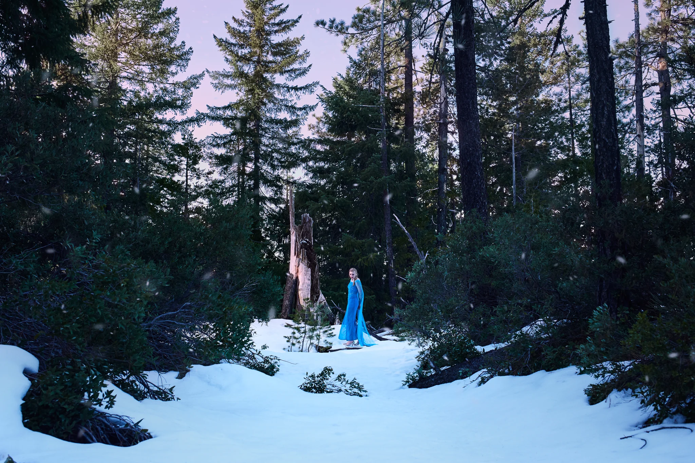
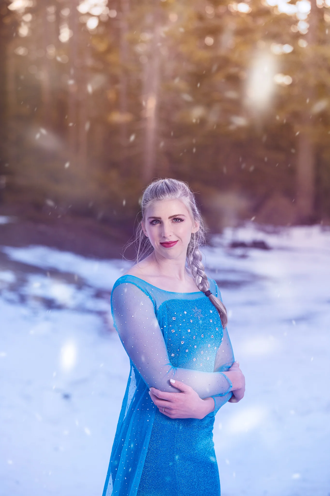
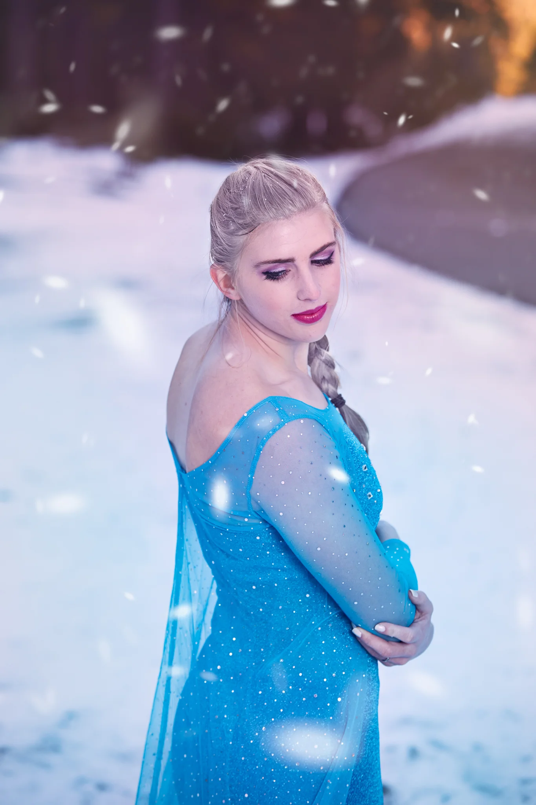
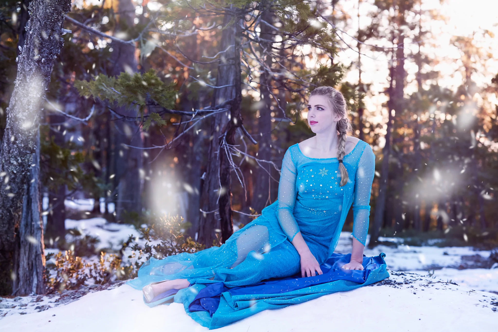
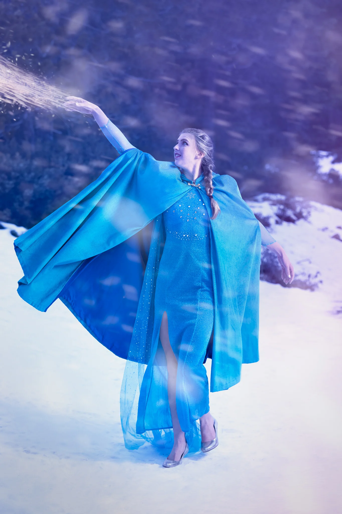

Frozen
As a photographer I've been in a pretty contemplative mood lately, but I'll end any notions of being vague right now. I want to be inspired, I want to make new work, and I want to put the days of doing what falls on my plate behind me and forge a career. The only way I know to do this while I wait for the readiness to jump in full time is to take pictures, and make art.
I've never been one for fairy-tale focused photography, or the creation of Disney characters. I've always said to myself they lack creativity, but in the search for inspiration, I've learned to take every opportunity, and this one wouldn't be the exception. My friend Marissa mentioned that she was going to be in a live production of Frozen, and after some talking, we jokingly decided to do a photo shoot. We picked a date, Marissa ordered the dress, and we roped in her boyfriend Daniel to drive us up the mountain and assist with the photo-shoot. Our friend Natalie is a talented make-up artist and she met with us at Marissa's to get her hair and make-up Elsa-ready before our trip up to horse mountain.

The shoot started slow, as there was no scouting ahead for snow with the unpredictable weather. We walked around, I found our first stop and we started shooting after setting up the lights. At this point it set in how cold it was going to be, Marissa began to feel the effect of wearing heals in the snow, but we were there already and she was determined. After several shots and a couple feet warming breaks we finished our first shot and started scouting for the second.
While looking for another scene, I found a frame in the forest that was distinctly mine. It's hard to describe, but to put it plainly, a photographer can take 100 nice photos, but only one of them is theirs. They would quickly toss out the other 99, just to save the one.

The rest of the shoot was easy going, but the cold had taken its toll and the sun was fleeting. We took some final portraits with the setting sun, packed up and began the trip back home, privileged to watch the remnants of a beautiful sunset in a warm SUV.



